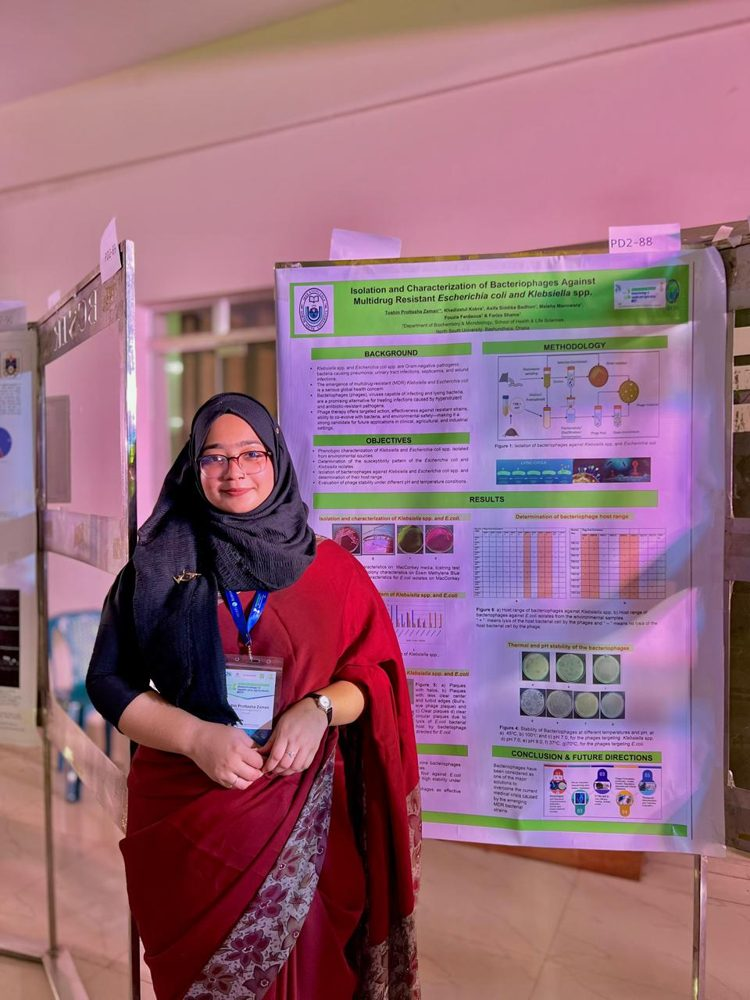
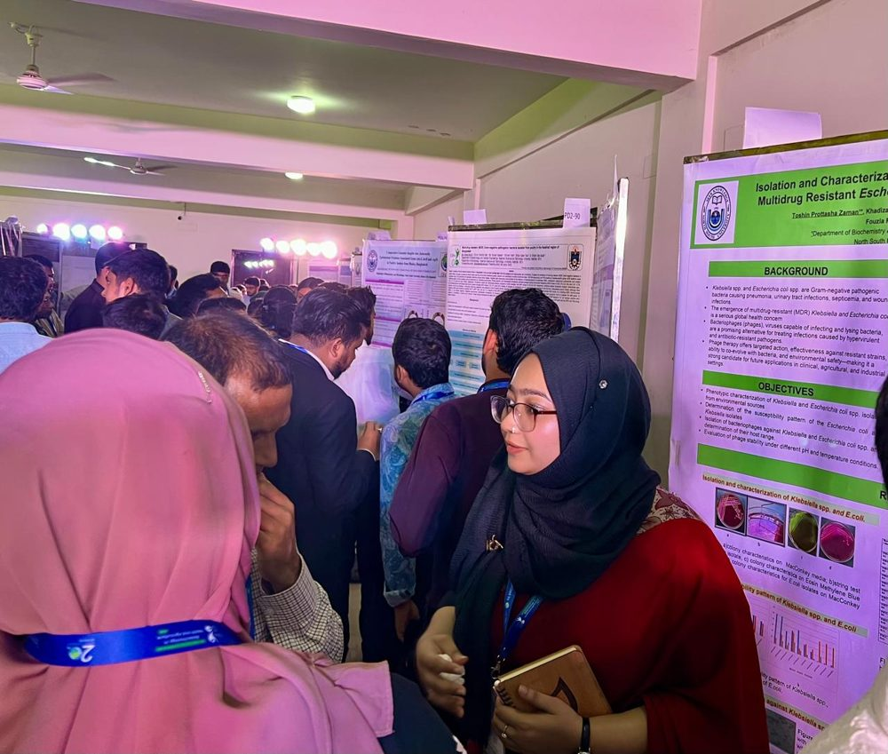
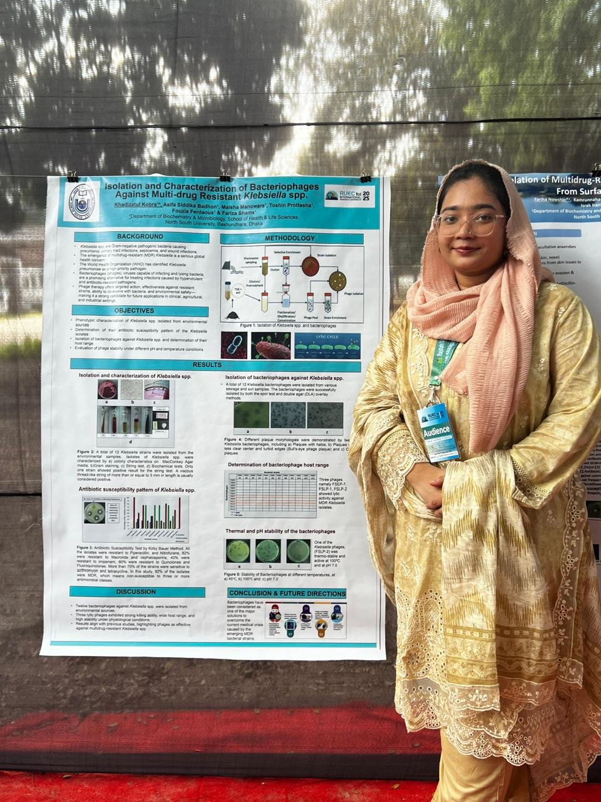

Research
Undergraduate Thesis Project, Clinical Microbiology
A Comparison of Antibiotic and Phage Susceptibility in Planktonic and Biofilm-Derived Cells of Clinical Klebsiella spp.
- Worked with multidrug-resistant (MDR) clinical bacterial isolates and bacteriophages.
- Compared antibiotic susceptibility and phage susceptibility in planktonic and biofilm-derived cells.
- Mentored and trained junior students, who shadowed my laboratory work under our supervisor.
Technical Skills
Antimicrobial Testing
- Antibiotic Susceptibility Testing
- Antibiotic Assay by Diffusion
- Phage Susceptibility Assays
- Biofilm Assays
Bacteriology and Phage Work
- Isolation and Extraction of Bacteriophage and Bacteria
- Screening and Maintenance of Bacterial Organisms
- Bacterial Culture
- Sample Processing
Staining, Microscopy and Lab Practice
- Gram Staining
- Capsule Staining
- Microscopy
- Aseptic Technique
- Biosafety Practices
Education
BSc in Microbiology
GCE Advanced Level (Cambridge Curriculum), 2020
GCE Ordinary Level (Cambridge Curriculum), 2018
Poster Presentations at Conferences
Isolation and Characterization of Bacteriophages Against Multidrug-Resistant Escherichia coli and Klebsiella spp.


Isolation and Characterization of Bacteriophages Against Multidrug-Resistant Klebsiella spp.

Training
- Biosafety Training, North South University
- Beginner Bioinformatics (online course), National Institute of Biotechnology (NIB), Bangladesh
About
My laboratory work centers on multidrug-resistant (MDR) bacteria and bacteriophages, a part of clinical microbiology. My thesis compared antibiotic and phage susceptibility in planktonic and biofilm-derived cells of clinical Klebsiella spp.
Contact
Open to internships and full‑time job roles in Microbiology Labs.
- Emailtoshinzaman@gmail.com
- LinkedInlinkedin.com/in/toshin-zaman-64091b349
- LocationDhaka, Bangladesh